ItsDrDan brand kit
One look for every study game and the hub. Games load brand/itsdrdan.css after their own styles; icons come from brand/icons.js. Change a token here and every game follows.
Colors
--accent #4b57d1--accent-soft #eef0fe--ink #1f2a44--muted #4f5a74--faint #6f7890--paper #fffdf9#e8f6ef / #23704f#fdedf0 / #9c3346#fff6e2 / #80601a--lav #f3effd--sky #eaf4fb#23776c#4757b3#b0533b#86509bType
Fredoka 600 · titles, tile names, primary buttons
Nunito 600 · body, prompts, labels. Chemistry formulas use real sub/superscripts: CaCl2, SO42−, 6.022 × 1023.
Muted · helper text. One helper line per step, not one per box.
Faint · footnotes, sources, tags.
Buttons, chips, fields, feedback
Icons (line art, 24-grid, currentColor)
Use these for interface chrome (modes, coach, chips, medals' neighbors) instead of emoji, so every device renders them the same. Tile art and medals stay as the bigger filled SVG illustrations.
Illustrated badges (Dr. Dan’s set)
Generated from the brand prompt and cut to transparent 256 × 256 WebP. Use these for topic tiles, feature cards and ranks (bigger, filled art); keep the line icons above for small interface chrome. Files live at brand/badges/<name>.webp.
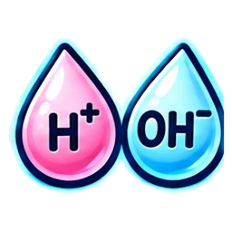
acidbase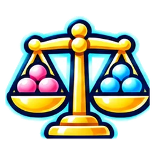
balance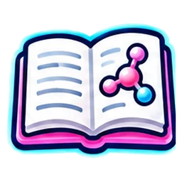
book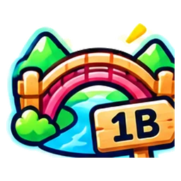
bridge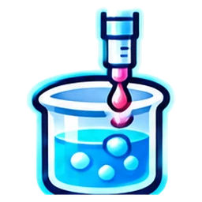
burette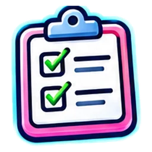
checklist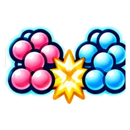
collide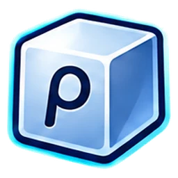
density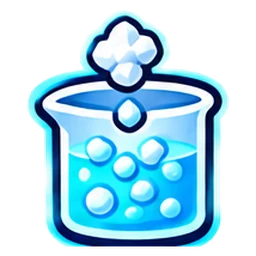
dissolve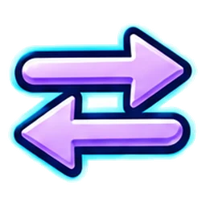
equilibrium finish
finish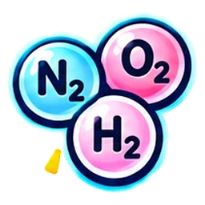
gases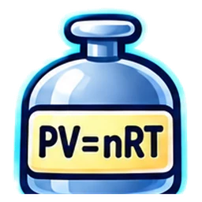
gaslaw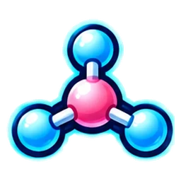
geometry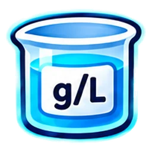
gperl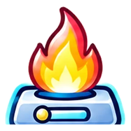
heat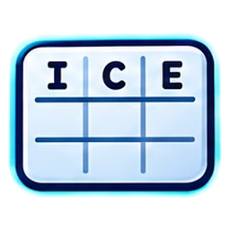
ice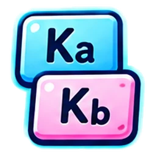
kakb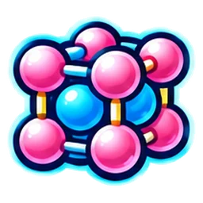
lattice medal
medal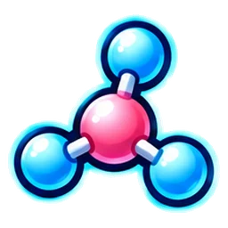
molecule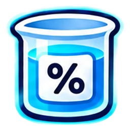
percent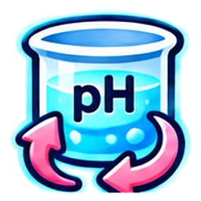
phbeaker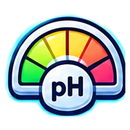
phgauge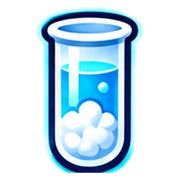
precipitate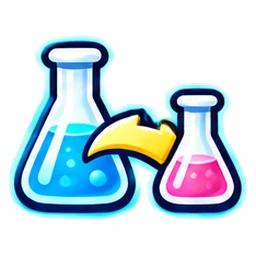
react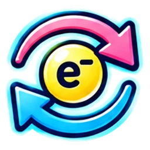
redox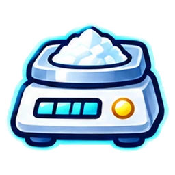
scale stars
stars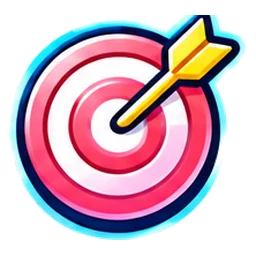
target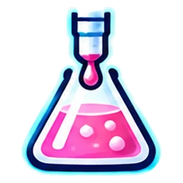
titrate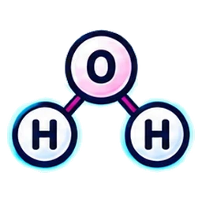
waterIllustrations (logos, mascots, hero art)
Big illustrative art — each game's logo badge, the mascot, hero pieces — can come from an image model (ChatGPT/DALL·E, Midjourney). Keep them consistent by using the same spec every time and saving them where the hub expects them: games/assets/games/<game id>.webp, square 1024 × 1024, transparent or circular badge, under 150 KB.
Prompt template (paste as-is, then change the subject line):
Flat, friendly vector illustration for a chemistry study game badge. Thick dark-navy outlines (#2e2b38), soft pastel fills (mint #e8f6ef, lavender #f3effd, sky #eaf4fb, peach #fdeee8, butter #fff6e2), one warm accent (#ffd36b), subtle paper texture, no gradients heavier than a light wash, no text, no photorealism, no 3D render. Round badge composition with a thin gold ring (#e1b072) and a navy outer ring, centered subject, generous margin, white or transparent background, 1024×1024. Subject: a cheerful cartoon atom hiker with a backpack carrying a small flag, striding across a rope bridge made of an electron orbital. Match the style of the ItsDrDan Bridge to 1B badge.
| Asset | Size | Where |
|---|---|---|
| Game logo badge | 1024² → saved as .webp, also a 512² logo.png in the game repo | games/assets/games/<id>.webp + <id>/logo.png |
| Mascot (mood variants) | SVG preferred (Bridge to 1B's hiker is SVG so it can change expression) | inline in the game |
| Hero / course art | 1600 × 600, .webp, under 200 KB | games/assets/ |
| Medals, UI icons | SVG only (this kit) | brand/icons.js, game BART sets |
Using the kit in a game
<!-- after the game's own </style> -->
<link rel="stylesheet" href="https://itsdrdan.github.io/games/brand/itsdrdan.css">
<script src="https://itsdrdan.github.io/games/brand/icons.js"></script>
<script src="https://itsdrdan.github.io/games/brand/embed.js" defer></script> <!-- Canvas: grows the iframe to fit, no inner scrollbar -->
<!-- then anywhere in the game -->
button.innerHTML = ddIcon('bulb') + ' Hint';
Tokens the games already read: --bg --surface --ink --muted --faint --line --line2 --accent --accent-d --accent-soft --mint --mint-ink --mint-line --amber --amber-ink --amber-line --rose --rose-ink --rose-line --lav --sky --r-lg --r-md --r-sm --shadow --font --serif.